Loading ...
|
4-2-3-1
|
England | 0 | - | 0 | Ghana |
4-1-4-1
|
| HT 0-0 | ||||||
|
FIFA World CupTuesday 23 June 2026
|
||||||
- Venue
- Boston Stadium
- Attendance
- 63,983
- Referee
- Héctor Saíd Martínez Sorto
Yellow card41'
D. Rice
Substitution65'
A. Gordon
B. Saka
Substitution66'
D. Spence
N. O'Reilly
Substitution73'
J. Bellingham
M. Rogers
Substitution74'
E. Anderson
E. Eze
Substitution83'
N. Madueke
M. Rashford
Whistle45+7'
45+7'
Yellow card60'
I. Williams
Substitution66'
I. Williams
A. Fatawu
Substitution67'
J. Ayew
P. Adu
Substitution87'
M. Senaya
K. Peprah Oppong
Substitution90+5'
P. Adu
A. Baba
England | |
|---|---|
Goalkeeper | |
| 1 | J. Pickford |
Defender | |
| 2 | E. Konsa |
| 6 | M. Guéhi |
| 24 | R. James |
| 25 | D. Spence 66' |
Midfielder | |
| 4 | D. Rice 41' |
| 8 | E. Anderson 74' |
| 10 | J. Bellingham 73' |
| 18 | A. Gordon 65' |
| 20 | N. Madueke 83' |
Forward | |
| 9 | H. Kane |
Substitutes | |
| 3 | N. O'Reilly 66' |
| 7 | B. Saka 65' |
| 11 | M. Rashford 83' |
| 17 | M. Rogers 73' |
| 21 | E. Eze 74' |
Ghana | |
Goalkeeper | |
| 16 | B. Asare |
Defender | |
| 4 | J. Adjetey |
| 14 | G. Mensah |
| 18 | J. Opoku |
| 26 | M. Senaya 87' |
Midfielder | |
| 3 | C. Yirenkyi |
| 5 | T. Partey |
| 8 | K. Sibo |
| 11 | A. Semenyo |
| 19 | I. Williams 60'66' |
Forward | |
| 9 | J. Ayew 67' |
Substitutes | |
| 7 | A. Fatawu 66' |
| 17 | A. Baba 90+5' |
| 21 | K. Peprah Oppong 87' |
| 25 | P. Adu 67'90+5' |


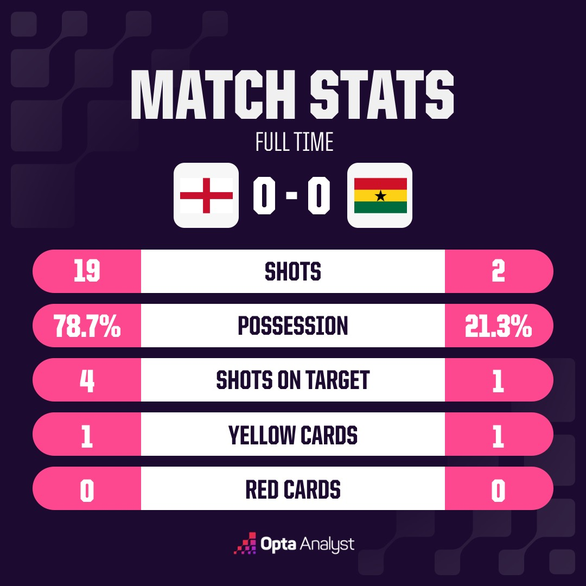
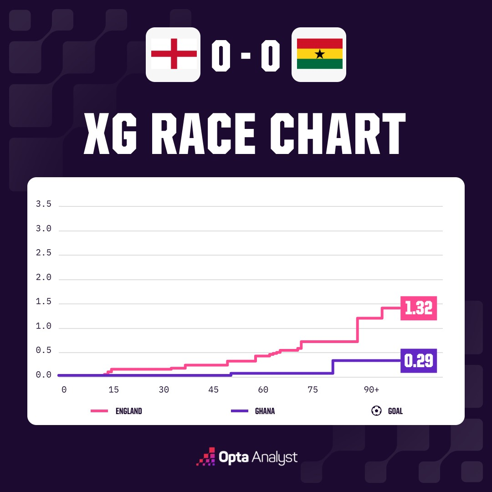
98'
Ghana attempted 2 shots in this game, their lowest total in a single match in the 2026 FIFA World Cup.
98'
England attempted 19 shots in this game, their lowest total in a single match in the 2026 FIFA World Cup.
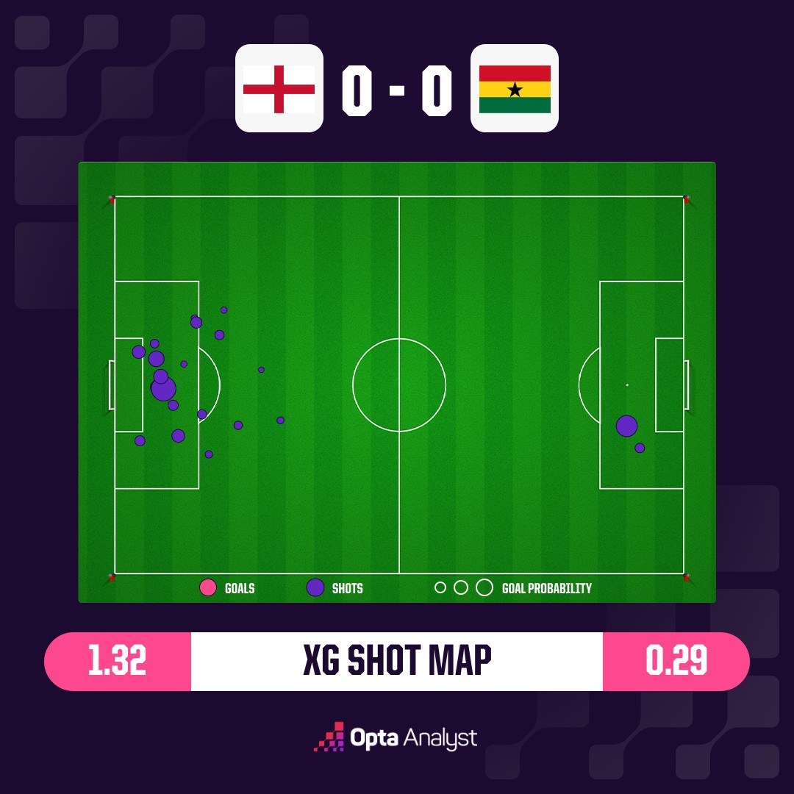
90+7'
That's it! The referee blows the whistle and we have reached full-time. The final score at Boston Stadium is England 0-0 Ghana.
90+6'
Morgan Rogers goes in on Thomas Partey and concedes a foul. The free-kick is not in a particularly dangerous area from England’s viewpoint, though.
90+5'
Prince Adu’s match is over as Ghana decide to make a substitution. Abdul Baba enters the field in what looks like a tactical change.
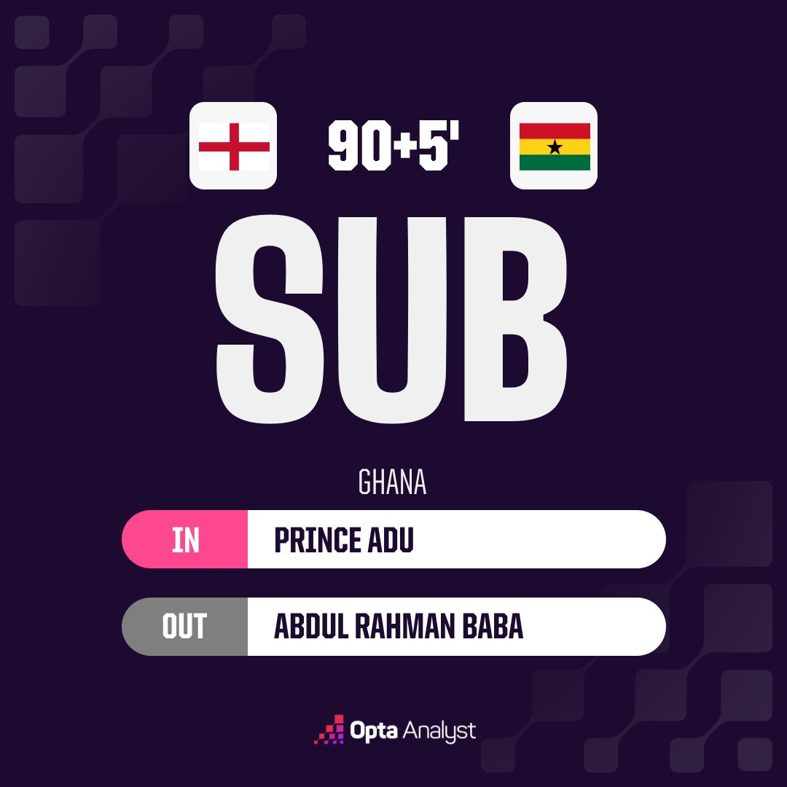
90+5'
A chance now for England to get a good delivery into the box, after the ball is diverted behind for a corner. England have been pushing for what would be a key goal, but Ghana have stood firm so far.
90+5'
The deadlock could be about to break. England with a flurry of set-pieces in dangerous territory.
90+3'
Can Ghana survive here? They will have some defending to do after the ball is turned behind for a corner kick. Will England take this opportunity and grab the goal they have been pushing for?
90+3'
MISS! The score remains 0-0, with Ghana relieved after England’s Marc Guéhi goes for goal but sends their attempt off target. Not one to write home about, that one.
90+3'
That is a disappointing effort from Nico O'Reilly, who went for glory but got their attempt wrong, and the shot sailed off target. A frustrating moment for England.
90+3'
Can Ghana survive here? They will have some defending to do after the ball is turned behind for a corner kick. Will England take this opportunity and grab the goal they have been pushing for?
90+2'
England are having plenty of the ball, with 84.62% possession in the last 15 minutes. However, they have been unable to transfer that possessional dominance into a goal during that period.
90+1'
Corner! The ball goes behind and now England will aim to deliver a good ball into the penalty area and test that Ghana defence, which has been frustrating them in recent minutes.
90+1'
A rash challenge from Antoine Semenyo, who sends Ezri Konsa tumbling, giving England a free-kick. It is not in a threatening position, but it gives them a chance to get back on the ball.
89'
A foul from Marcus Rashford on Caleb Yirenkyi sees Ghana win a free-kick, but it is not in a dangerous position, so England should be confident they can defend it easily enough.
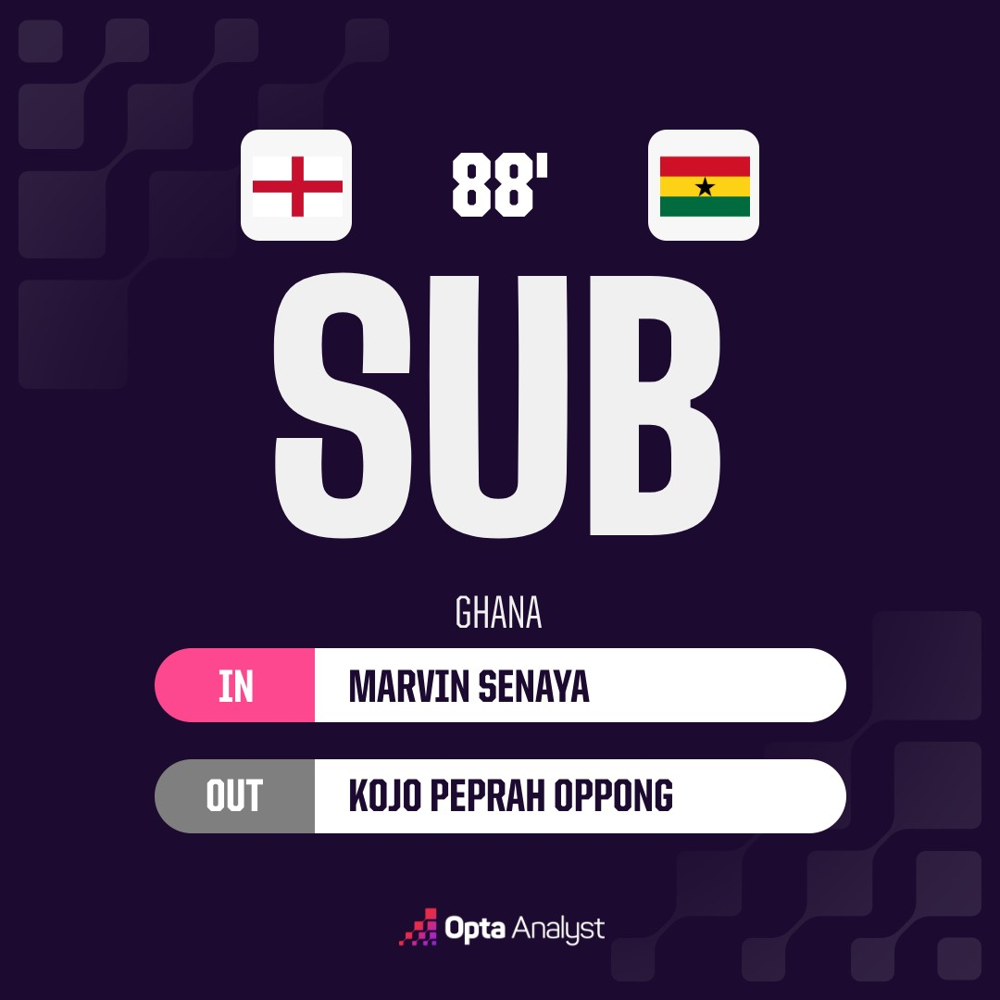
87'
A substitution for Ghana sees Marvin Senaya replaced by Kojo Peprah Oppong. There does not appear to be any obvious sign of an injury, so that is a tactical switch.
86'
MISSED! That is really poor from Harry Kane, who fails to convert from a golden opportunity, with the goal gaping. Will England pay for their profligacy, or can they put that miss behind them?
86'
What a miss! That was a huge chance for Nico O'Reilly, but they have failed to convert. What an opportunity that was for England.
86'
Benjamin Asare is called into action to keep out a shot from outside the box by Bukayo Saka. The effort from the England player was on target, but Ghana shot-stopper got to it.
86'
Declan Rice has created 5 chances, his highest total in a single match in the FIFA World Cup.
85'
Plenty of the ball in the last quarter-of-an-hour of this match for England, but Ghana have been able to hold them off with ease, with England having failed to even muster a shot at goal.
85'
Free-kick! A foul from Marcus Rashford on Abdul Fatawu. It is well away from England’s goal, so it is unlikely to result in a chance for Ghana.
84'
A rash challenge from Caleb Yirenkyi, who sends Eberechi Eze tumbling, giving England a free-kick. It is not in a threatening position, but it gives them a chance to get back on the ball.
83'
A substitution for England sees Noni Madueke replaced by Marcus Rashford. There does not appear to be any obvious sign of an injury, so that is a tactical switch.
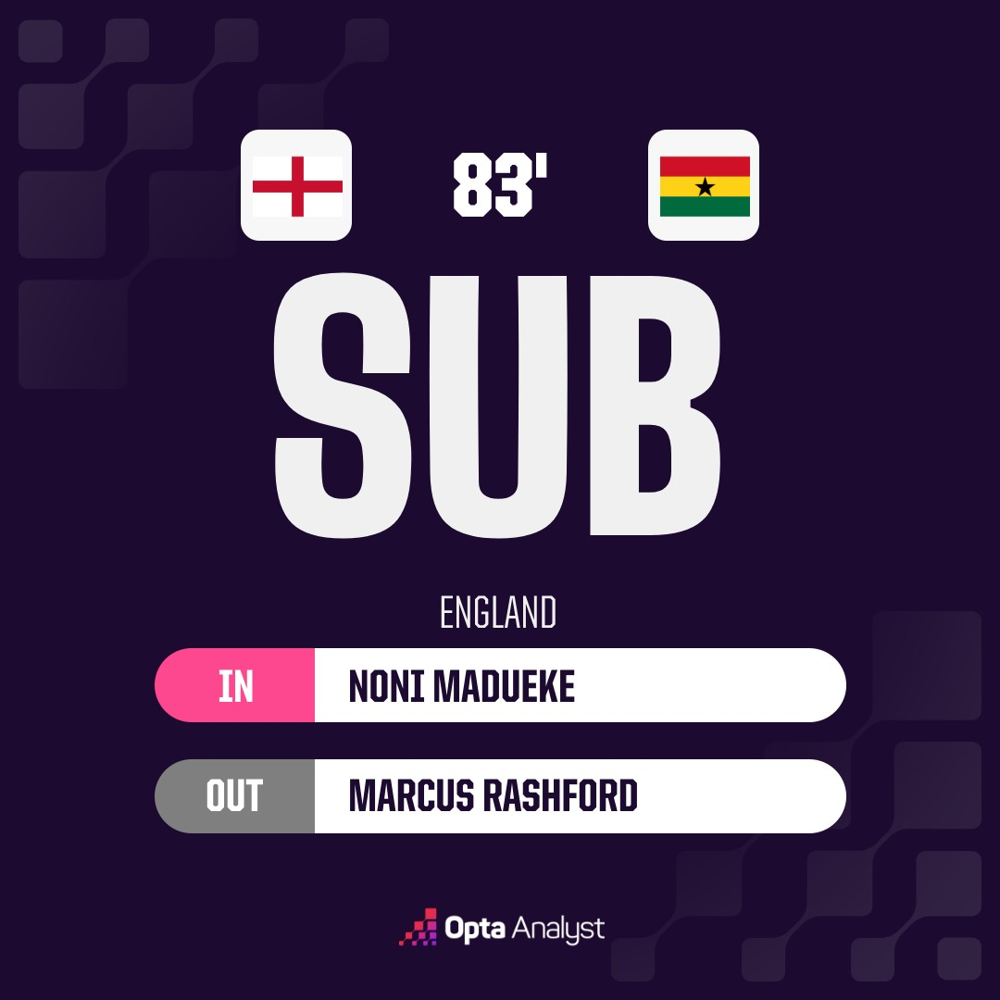
83'
A free-kick to Ghana, as Marc Guéhi goes in and fouls Caleb Yirenkyi. However, England will not mind giving one away in this area too much, with plenty of distance to their goal.
82'
Can England make this chance count? They have won a free-kick in a threatening position after a foul from Gideon Mensah on Bukayo Saka. Will Ghana's defence be tested here?
81'
That is offside! England are pushing for a goal but Bukayo Saka is a little bit too eager, and just strays offside in the build-up, in what was a promising attacking move.
79'
The England defence steps up in time and there is a frustration for Antoine Semenyo, who thought they were through until the flag goes up to signal offside.
79'
HUGE CHANCE GOES BEGGING! What a miss that is from Prince Adu, who looked all set to score a goal that their team need, but instead fails to direct their attempt into the back of the net. That was a big, big opportunity for Ghana.
78'
Free-kick! A foul from Gideon Mensah on Bukayo Saka. It is well away from Ghana’s goal, so it is unlikely to result in a chance for England.
77'
Harry Kane goes in on Marvin Senaya and concedes a foul. The free-kick is not in a particularly dangerous area from England’s viewpoint, though.
77'
There is plenty of possession for England, with 88.00% compared to Ghana 12.00% in the last 15 minutes. However, England have not been able to turn that dominance of the ball into a goal.
76'
England have had more of the ball with 75 minutes played, with 77.52% possession compared to Ghana’s 22.48%. That is not likely to change too much in the final 15 minutes.
75'
Can Ghana survive here? They will have some defending to do after the ball is turned behind for a corner kick. Will England take this opportunity and grab the goal they have been pushing for?
74'
Kwasi Sibo goes in on Bukayo Saka and concedes a foul. The free-kick is not in a particularly dangerous area from Ghana’s viewpoint, though.
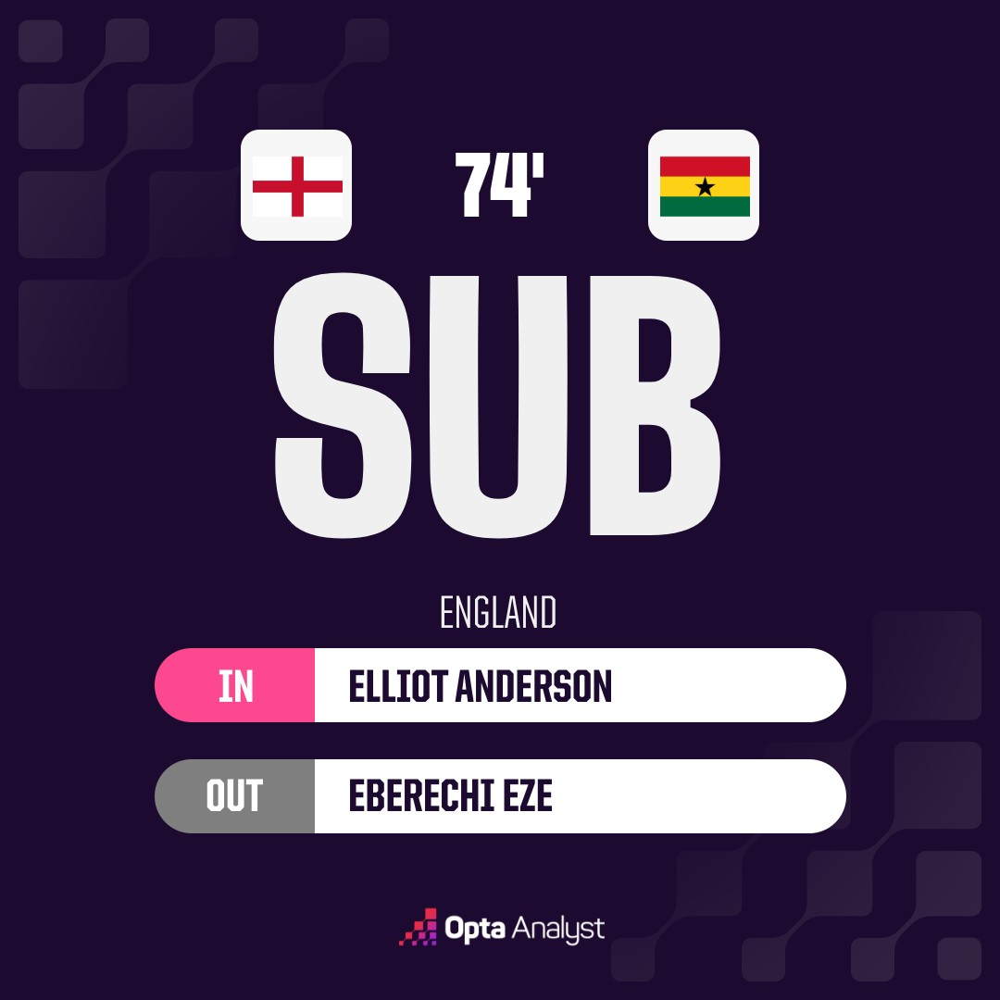
74'
The England manager is looking to the substitutes’ bench, bringing on Eberechi Eze in place of Elliot Anderson. Will the change make a difference? Let’s find out!
73'
England are making a tactical change. Jude Bellingham is leaving the field and in their place comes Morgan Rogers – we will soon see if this switch has the desired impact.
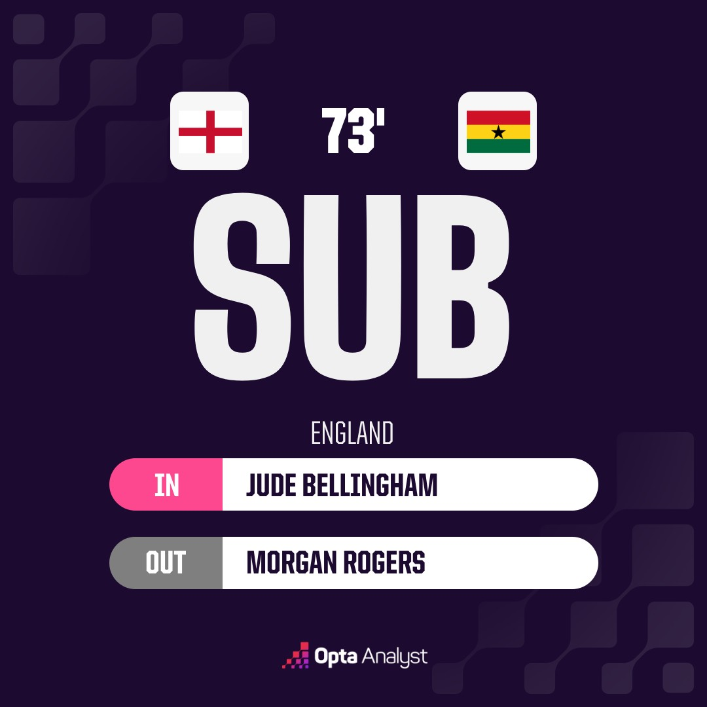
70'
England have attempted the last 8 shots in this game, Ghana last shot was taken by Marvin Senaya in the 50th minute.
70'
No luck! Bukayo Saka takes on a shot that, had they got it right, might have been set to test the goalkeeper, but instead it is sent off target and Ghana come away unscathed.
69'
SAVE! A shot from outside the box by England Harry Kane was heading in, but Ghana Benjamin Asare keeps it out with a smart stop.
67'
Free-kick! A foul from Prince Adu on Jordan Pickford. It is well away from Ghana’s goal, so it is unlikely to result in a chance for England.
67'
Ghana are making a tactical change. Jordan Ayew is leaving the field and in their place comes Prince Adu – we will soon see if this switch has the desired impact.
66'
Iñaki Williams’s match is over as Ghana decide to make a substitution. Abdul Fatawu enters the field in what looks like a tactical change.
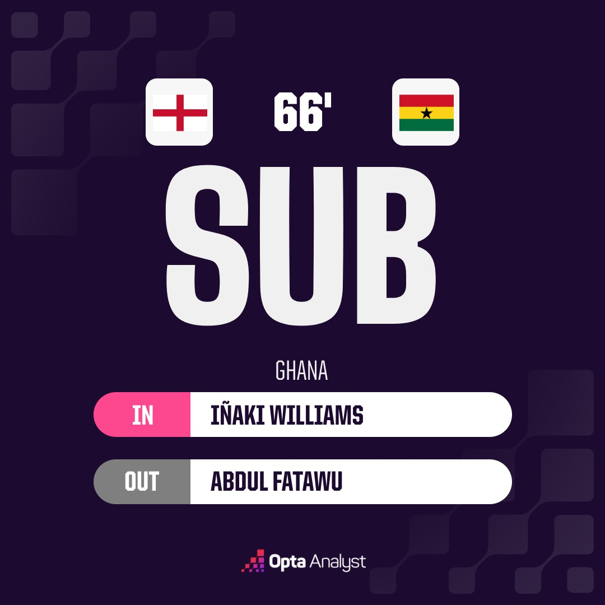
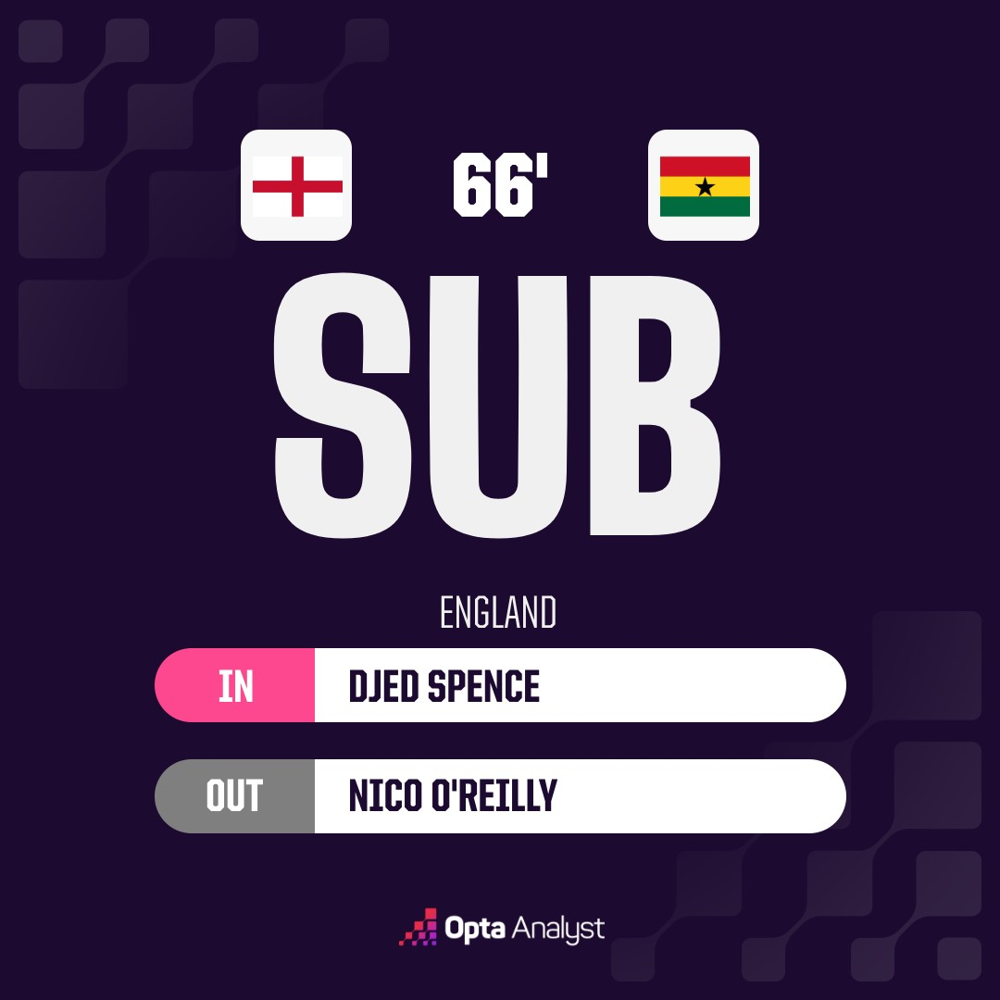
66'
With 25 minutes left to play, this game is about to go into its final quarter. So, that seems a good chance to check on the shot count. England have had 12 efforts, with 1 of those hitting the target. Ghana, on the other hand, have had 1 shot, getting 0 of this attempt on target.
66'
A substitution for England sees Djed Spence replaced by Nico O'Reilly. There does not appear to be any obvious sign of an injury, so that is a tactical switch.
65'
Anthony Gordon’s match is over as England decide to make a substitution. Bukayo Saka enters the field in what looks like a tactical change.
64'
A foul from Jordan Ayew on Marc Guéhi sees England win a free-kick, but it is not in a dangerous position, so Ghana should be confident they can defend it easily enough.
64'
That is a disappointing effort from Noni Madueke, who went for glory but got their attempt wrong, and the shot sailed off target. A frustrating moment for England.
63'
MISS! A shot from Elliot Anderson ends up being off target. They might have done a bit better with that one, but it remains England 0-0 Ghana.
62'
Foul! A free-kick now in a dangerous area for England, after Harry Kane is fouled by Thomas Partey. Can England make the most of this opportunity?
62'
That is a disappointing effort from Elliot Anderson, who went for glory but got their attempt wrong, and the shot sailed off target. A frustrating moment for England.
62'
England have had plenty of the ball in the last 15 minutes, with 69.35% possession compared to just 30.65% for their opponents. However, there’s not been any goal to come from that possessional dominance just yet.
61'
CORNER! The pressure is building for England as they win a set-piece after Elliot Anderson's attempt is blocked by Kwasi Sibo and diverted out of play.
60'
BOOKING! Yellow card for Iñaki Williams, who is penalised for a foul. The referee waves away their remonstrations, and now they will have to be careful.
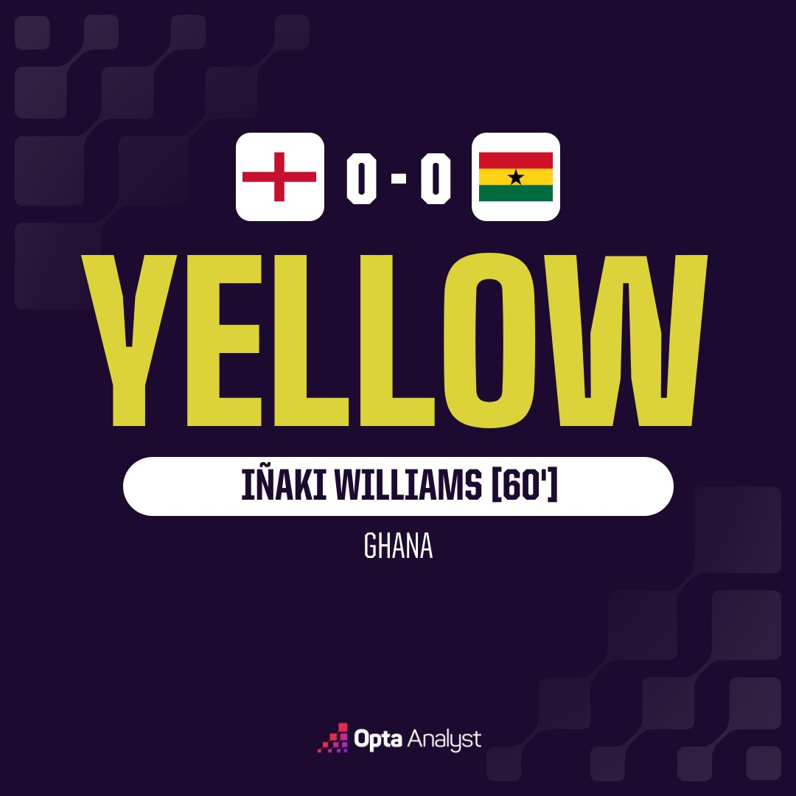
60'
Good play from Anthony Gordon, who draws a foul from Iñaki Williams to hand England a free-kick in a dangerous position. Will they create something from this set-piece?
58'
A free-kick to England, as Jordan Ayew goes in and fouls Marc Guéhi. However, Ghana will not mind giving one away in this area too much, with plenty of distance to their goal.
57'
SAVED! Good work from Benjamin Asare, who stands firm to deny Anthony Gordon, who managed to get a shot away from inside the Ghana area.
57'
BLOCK! An intervention from Jerome Opoku might have just prevented a goal, with the defending player getting in the way of an attempt from Noni Madueke. Solid defending there!
55'
This feels like a spell that could matter - England earning repeated chances to swing it in from wide areas.
55'
Kwasi Sibo goes in on Elliot Anderson and concedes a foul. The free-kick is not in a particularly dangerous area from Ghana’s viewpoint, though.
54'
A rash challenge from Jordan Ayew, who sends Elliot Anderson tumbling, giving England a free-kick. It is not in a threatening position, but it gives them a chance to get back on the ball.
54'
Free-kick! A foul from Caleb Yirenkyi on Jordan Pickford. It is well away from Ghana’s goal, so it is unlikely to result in a chance for England.
52'
A free-kick in a dangerous position now for England, after a foul from Kwasi Sibo on Marc Guéhi. Can England make Ghana pay for that rashness from Kwasi Sibo?
51'
A free-kick to England, as Jordan Ayew goes in and fouls Marc Guéhi. However, Ghana will not mind giving one away in this area too much, with plenty of distance to their goal.
50'
That might have been going in! A fantastic block from Djed Spence, who gets in the way of a goal-bound effort from Marvin Senaya. Would the goalkeeper have been beaten? We will never know.
47'
Foul! A free-kick now in a dangerous area for England, after Anthony Gordon is fouled by Marvin Senaya. Can England make the most of this opportunity?
45+7'
Half-time! The referee blows the whistle and it is time for the interval. As we reach the break it is England 0-0 Ghana at Boston Stadium.
45+6'
A rash challenge from Jude Bellingham, who sends Jerome Opoku tumbling, giving Ghana a free-kick. It is not in a threatening position, but it gives them a chance to get back on the ball.
45+4'
CORNER! The pressure is building for England as they win a set-piece after Harry Kane's attempt is blocked by Jonas Adjetey and diverted out of play.
45+2'
No goalmouth action for some time now, with neither team having had a shot in the past 10 minutes. Will there be a moment that changes things soon? England have seen plenty of the ball, however, with 61 per cent of the possession in their favour during that period.
45+1'
Plenty of the ball in the last quarter-of-an-hour of this match for England, but still Ghana stand firm, despite having had only 30.56% of the ball in that period. Can England make their possessional dominance count?
43'
Corner! Ghana are pushing for a goal and now they have an opportunity from this set-piece.
41'
That is a booking for Declan Rice, who has received their first yellow card. They are not happy with the decision, but it is done now, and they will have to be careful for the rest of this game.
41'
Declan Rice goes in on Jerome Opoku and concedes a foul. The free-kick is not in a particularly dangerous area from England’s viewpoint, though.
41'
Ghana have not had a shot so far in this game.
40'
Offside! Jude Bellingham thought they were through on goal, but the Ghana defence stepped up in time to catch them offside, and the assistant referee puts their flag up.
39'
A rash challenge from Elliot Anderson, who sends Jordan Ayew tumbling, giving Ghana a free-kick. It is not in a threatening position, but it gives them a chance to get back on the ball.
37'
A chance goes begging as Declan Rice gets off a shot that does not hit the target. They might have done better with that one, but instead it is a goal-kick to Ghana.
34'
A free-kick to Ghana, as Elliot Anderson goes in and fouls Gideon Mensah. However, England will not mind giving one away in this area too much, with plenty of distance to their goal.
33'
Great block from Thomas Partey, as they get in the way of an attempt from Jude Bellingham that might have been set to cause the goalkeeper some problems. Solid defending from the Ghana player.
32'
Free-kick! A foul from Jerome Opoku on Marc Guéhi. It is well away from Ghana’s goal, so it is unlikely to result in a chance for England.
32'
Ezri Konsa goes in on Jordan Ayew and concedes a foul. The free-kick is not in a particularly dangerous area from England’s viewpoint, though.
31'
Plenty of the ball in the last quarter-of-an-hour of this match for England, but Ghana have been able to hold them off with ease, with England having failed to even muster a shot at goal.
31'
Anthony Gordon goes in on Marvin Senaya and concedes a foul. The free-kick is not in a particularly dangerous area from England’s viewpoint, though.
31'
England have had plenty of the ball in the last 15 minutes, with 81.05% possession compared to just 18.95% for their opponents. However, there’s not been any goal to come from that possessional dominance just yet.
29'
Not much goalmouth action to speak of in this period of the game, with no attempts made from either side. This game could spark at any moment, however. It is England who have had more of the ball, controlling 80 per cent possession in the last 10 minutes.
26'
Can England make this chance count? They have won a free-kick in a threatening position after a foul from Antoine Semenyo on Elliot Anderson. Will Ghana's defence be tested here?
24'
A rash challenge from Caleb Yirenkyi, who sends Marc Guéhi tumbling, giving England a free-kick. It is not in a threatening position, but it gives them a chance to get back on the ball.
20'
Free-kick! A foul from Antoine Semenyo on Ezri Konsa. It is well away from Ghana’s goal, so it is unlikely to result in a chance for England.
18'
A foul from Iñaki Williams on Marc Guéhi sees England win a free-kick, but it is not in a dangerous position, so Ghana should be confident they can defend it easily enough.
18'
A rash challenge from Ezri Konsa, who sends Jordan Ayew tumbling, giving Ghana a free-kick. It is not in a threatening position, but it gives them a chance to get back on the ball.
16'
Corner now for England, as they see a shot from Declan Rice deflected out of play for a set-piece. Ghana have some defending to do, here. Could this result in a big opportunity?
16'
There is plenty of possession for England, with 88.69% compared to Ghana 11.31% in the last 15 minutes. However, England have not been able to turn that dominance of the ball into a goal.
15'
BLOCK! An intervention from Kwasi Sibo might have just prevented a goal, with the defending player getting in the way of an attempt from Elliot Anderson. Solid defending there!
14'
A free-kick in a dangerous position now for England, after a foul from Jonas Adjetey on Harry Kane. Can England make Ghana pay for that rashness from Jonas Adjetey?
14'
No luck! Declan Rice takes on a shot that, had they got it right, might have been set to test the goalkeeper, but instead it is sent off target and Ghana come away unscathed.
13'
A free-kick in a dangerous position now for England, after a foul from Marvin Senaya on Anthony Gordon. Can England make Ghana pay for that rashness from Marvin Senaya?
11'
This game is certainly in a bit of a lull now, with neither team having had an attempt at goal in the past 10 minutes. It could do with something to spark it into life. England have had more possession during the quiet spell, but are yet to do much with it.
10'
It’s been tight so far, and Ghana are making sure it stays that way with strong defensive discipline and well-timed clearances.
8'
A foul from Jude Bellingham on Jerome Opoku sees Ghana win a free-kick, but it is not in a dangerous position, so England should be confident they can defend it easily enough.
6'
A free-kick in a dangerous position now for England, after a foul from Kwasi Sibo on Noni Madueke. Can England make Ghana pay for that rashness from Kwasi Sibo?
5'
Offside! Iñaki Williams thought they were through on goal, but the England defence stepped up in time to catch them offside, and the assistant referee puts their flag up.
2'
England enjoying a strong spell early on - their passing rhythm is already clicking as they try to set the tone.
1'
Up and running! England have kicked off and this FIFA World Cup match is now under way at Boston Stadium. Let’s hope for an intriguing battle on the pitch.
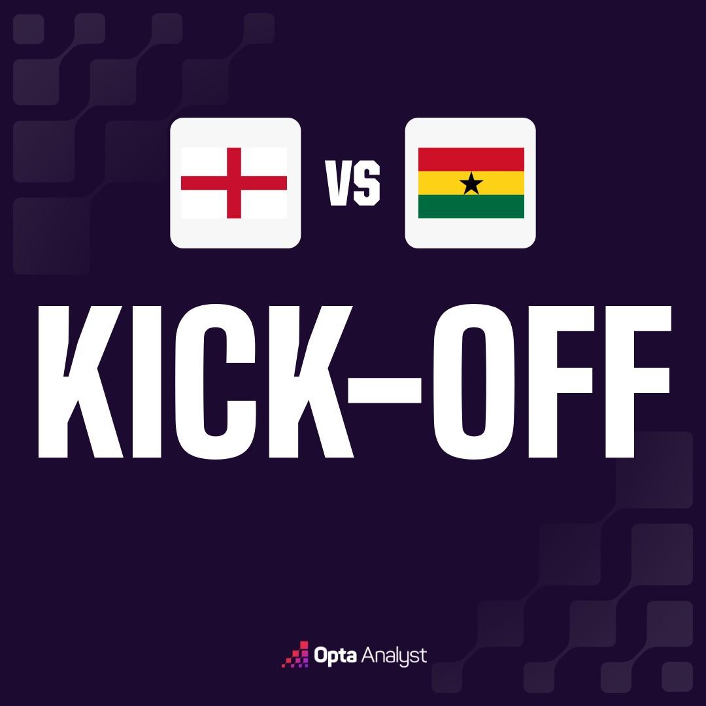
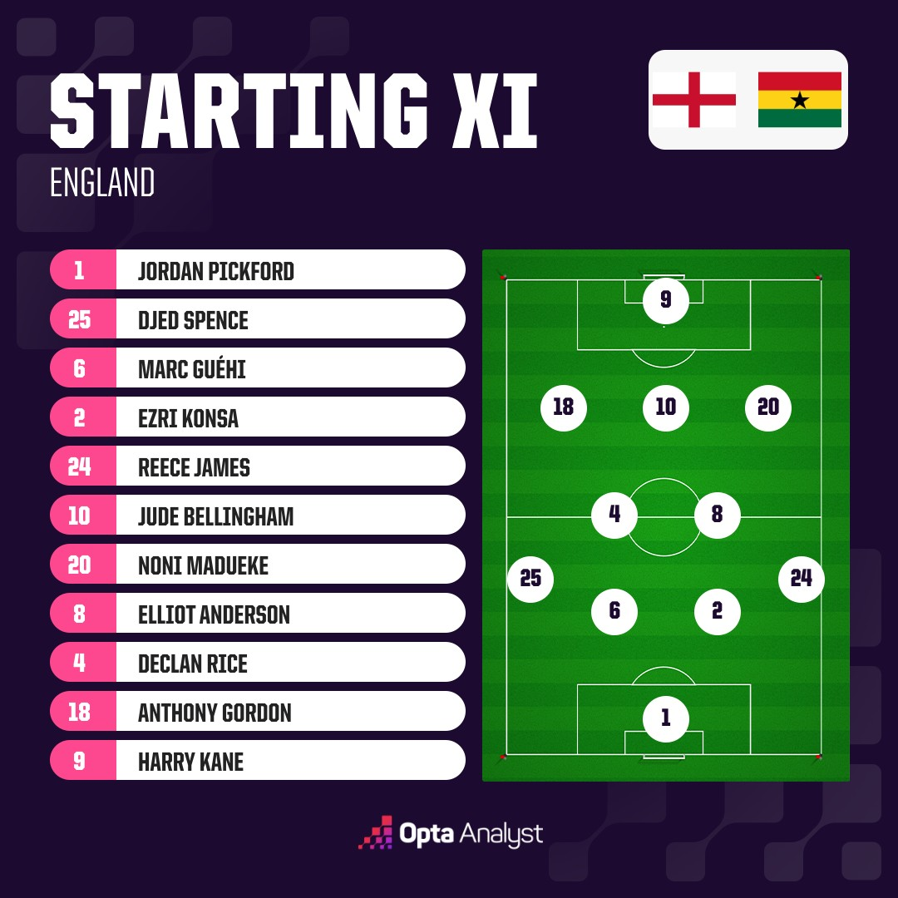
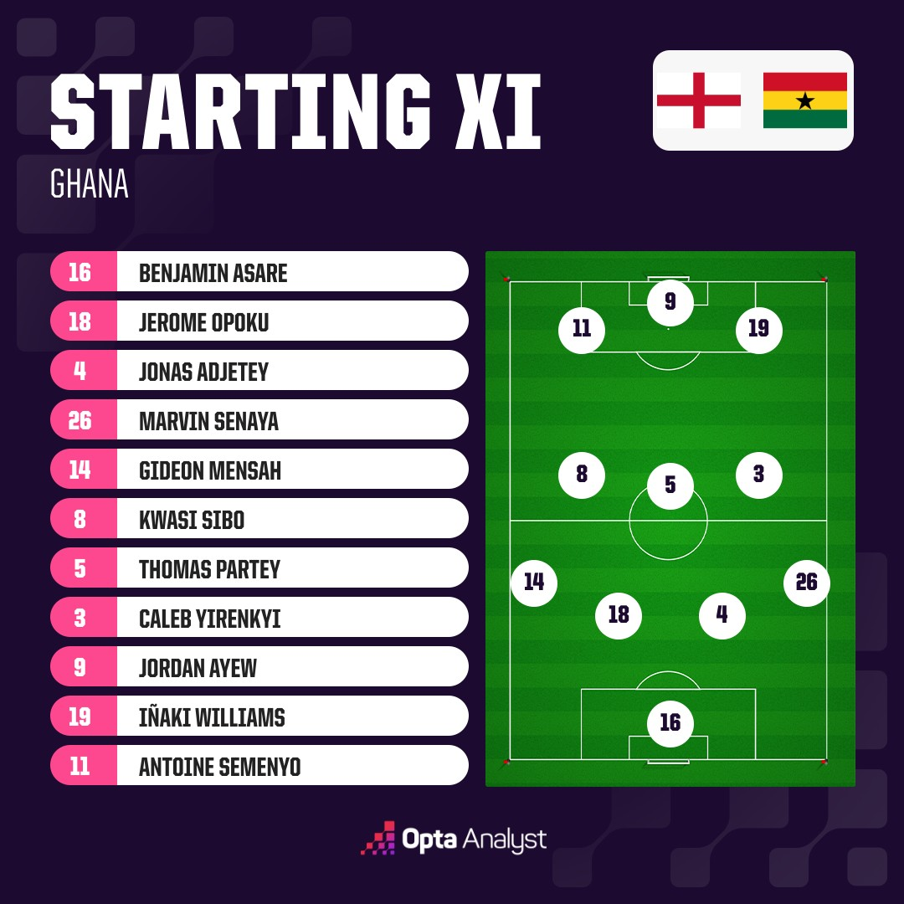
England have won their last 6 home matches in a row
Ghana have kept a clean sheet in the last 4 matches
H. Kane has scored in the last 2 games for England
England have won their last 12 matches in a row
England face Ghana on Tuesday at Boston Stadium in a clash of teams who boast perfect starts early in the FIFA World Cup group stage.
England defeated Croatia 4-2 in their opening World Cup group stage match on June 17. Harry Kane netted two to lead the scoring. They have three consecutive wins in all competitions. In five games this year, they have three wins, one draw, and one loss.
Ghana's opening World Cup group stage game saw them triumph 1-0 over Panama on June 17 at Toronto Stadium. Caleb Yirenkyi was on the scoresheet in the win. In 2026, they have won one, drawn one, and lost three.
England and Ghana are first and second in the group, respectively, level on three points. Meanwhile, Panama are sitting third on zero points. Croatia are fourth on zero points.
The teams played out a 1-1 draw in their previous encounter in March 2011.
Kane has the early World Cup scoring lead for England after netting two goals against Croatia. With a goal against Panama, Yirenkyi is the early leading World Cup scorer for Ghana.
In their last six matches in all competitions, England have won four, drawn one and lost one. The English side scored 11 and conceded four over that stretch, scoring first in five of the six contests. They had four first-half goals, while their opponents netted three times in the first 45 minutes. The Ghanaian side have won one, drawn one and lost four in their last six. The Ghanaian side scored four and conceded 11 over that period, netting first in two of the six. All of their goals came after halftime, while their opponents netted three times before the break.
-
General
Possession 78.9% 78.8621.1421.1% Possession lost in defensive half 11 113737 Possession lost in middle third 26 262222 Duels 112 112110110 Duels success rate 54.5% 54.46442.72742.7% Aerial duels 26 262626 Aerial duels won 69.2% 69.23130.76930.8% Successful dribbles 7 744 Fouls won 24 241414 Offsides 2 222 Corner awarded 9 922 -
Distribution
Passes 633 633172172 Long passes 26 265757 Long passes proportion (%) 4.1% 4.10733.1433.1% Passing accuracy 92.6% 92.57573.83773.8% Passes in opponents' half 430 4308181 Passing accuracy in opponents' half (%) 90.2% 90.23355.55655.6% Total passes in the final third 204 2044848 Passing accuracy in final third (%) 84.8% 84.80445.83345.8% Forward passes 374 374122122 Forward passes (%) 59.1% 59.08470.9370.9% Through balls 1 122 Final third entries 88 884040 Penalty area entries 43 4399 Total open play crosses 18 1833 Crosses 30 3055 Crossing accuracy 23.3% 23.33300.0% -
Attack
Goals 0 000 Shots 19 1922 Shots on target 3 311 Blocked shots 6 611 Headed shots 7 700 Shots outside the box 5 500 Shots inside the box 14 1422 Shots accuracy excluding blocked shots 23.1% 23.077100100.0% Shooting accuracy 15.8% 15.7895050.0% Key Passes 14 1411 -
Defence
Tackles 14 142222 Tackles success rate 50.0% 5077.27377.3% Clearances 6 63939 Interceptions 1 188 Recoveries 33 332828 Attacking third recovery 3 322 Defensive third recovery 21 212121 Midfield third recovery 9 955 Recoveries in attacking half (%) 9.1% 9.0917.1437.1% -
Discipline
Fouls conceded 14 142424 Yellow cards 1 111 Red cards 0 000